The world centre of yurt-making is a single village on Lake Issyk-Kul. We work inside it, and we supply the resorts that want the real thing at scale.
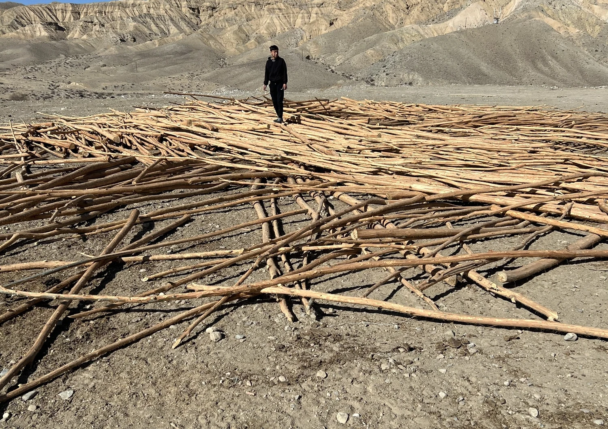
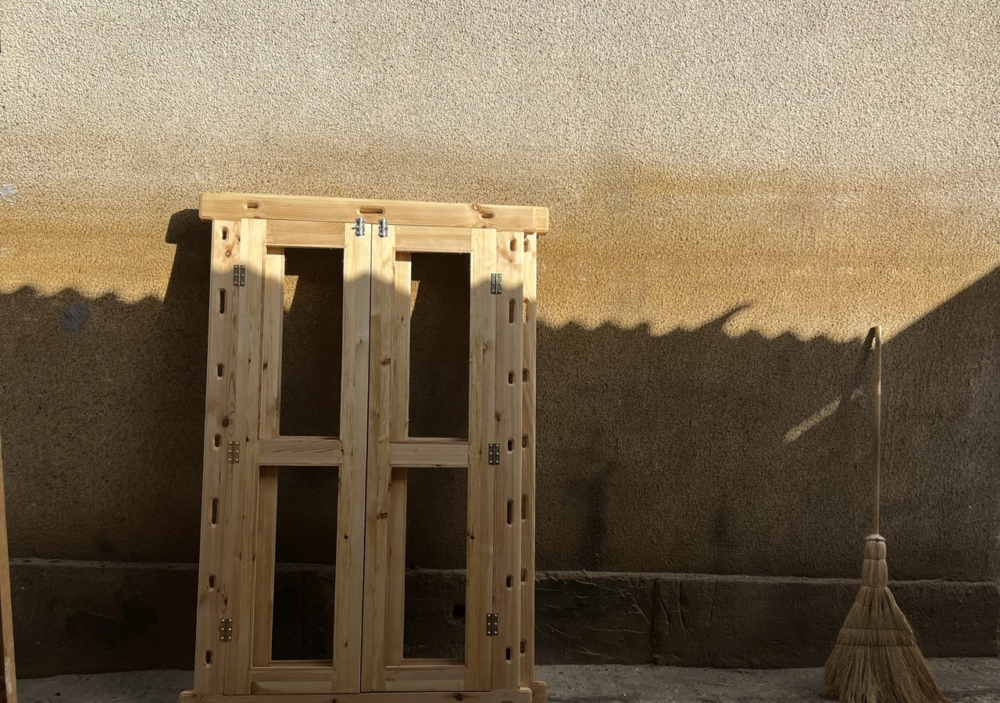
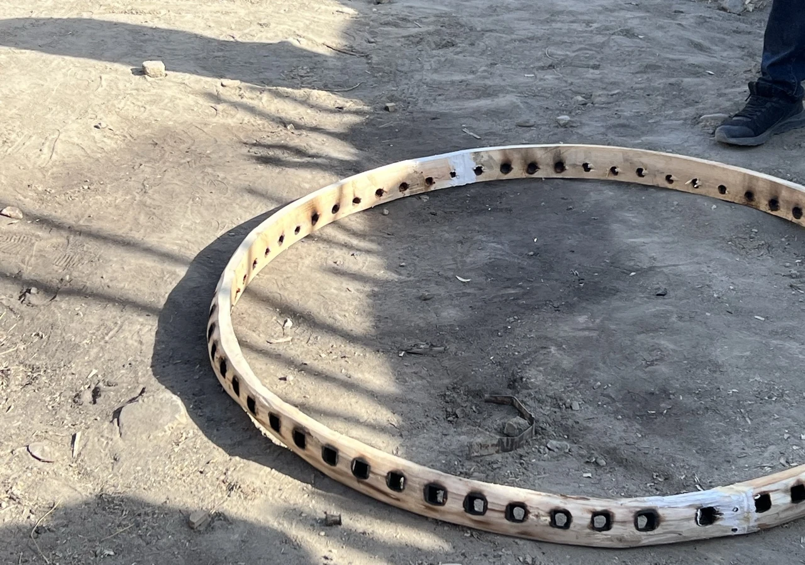
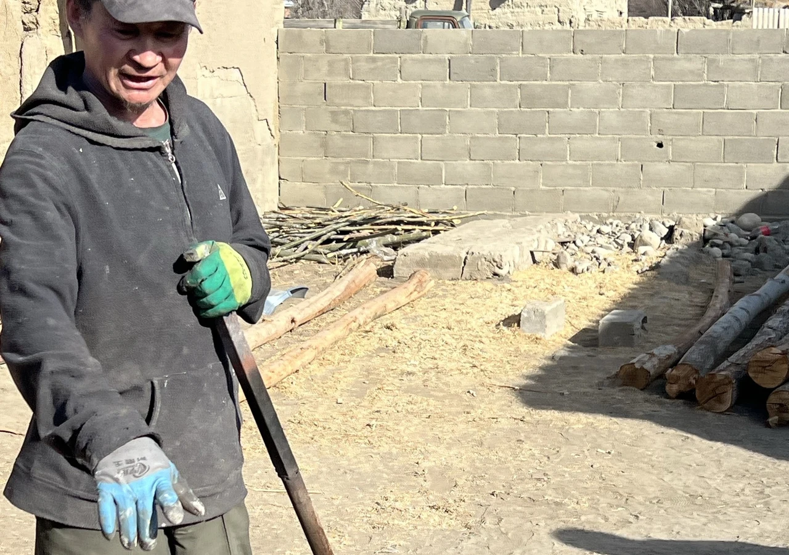
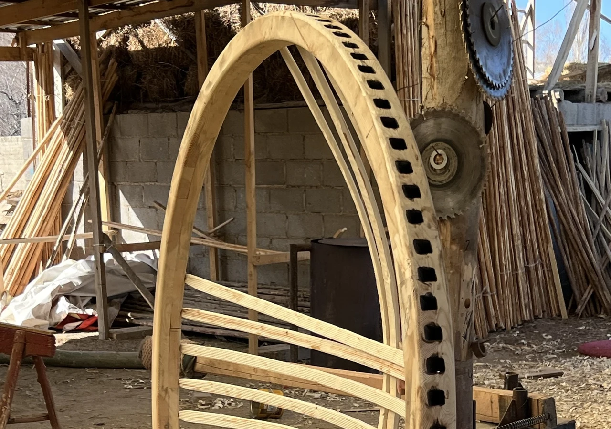
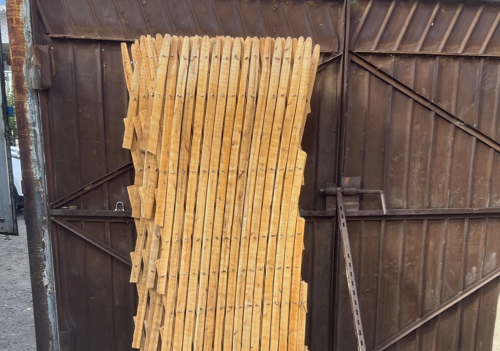
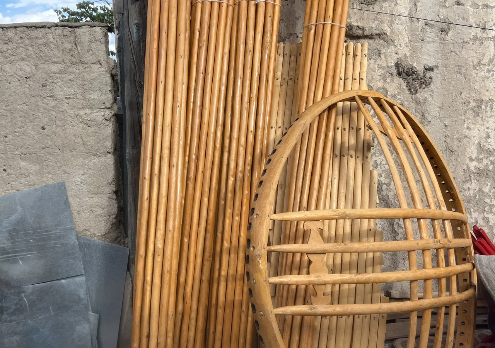
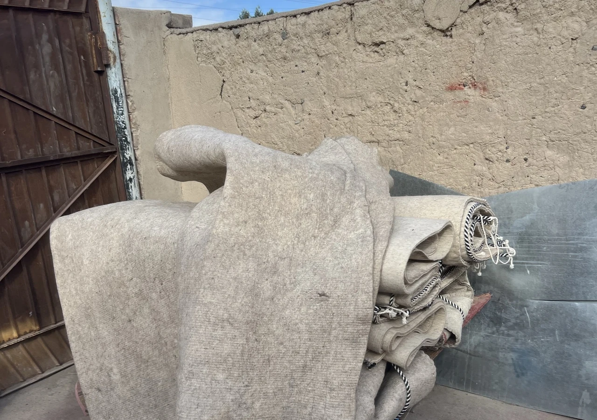
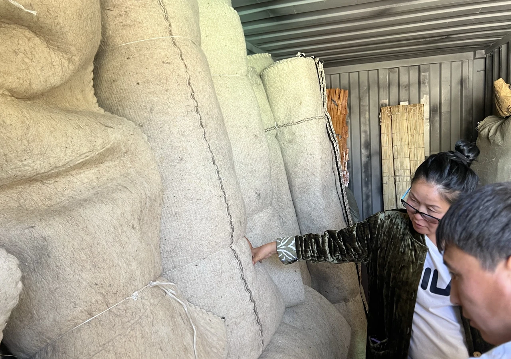
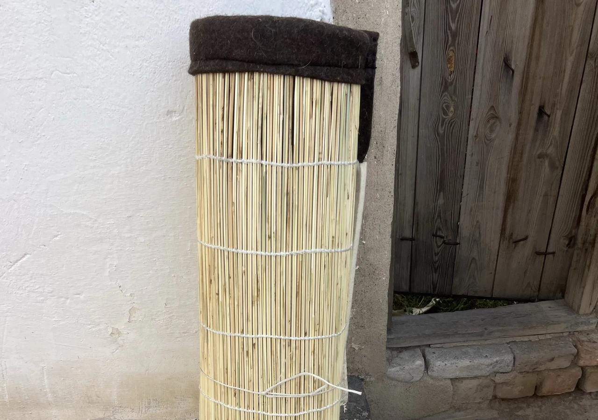
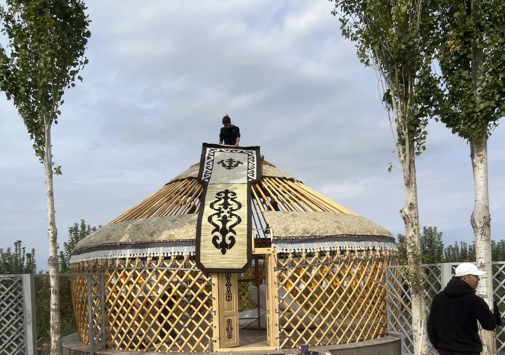
A boz üy, made by hand in Kyzyl-Tuu · from willow to the raising
A boz üy dressed in its tassels, its painted frame, its bright shyrdak is one of the most powerful ethnic expressions on earth. It belongs in Kyrgyzstan. We do not believe it belongs, whole, in a resort in Greece, or France, or Illinois.
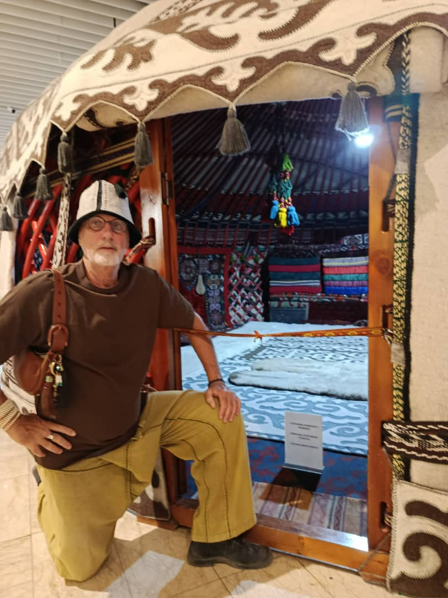
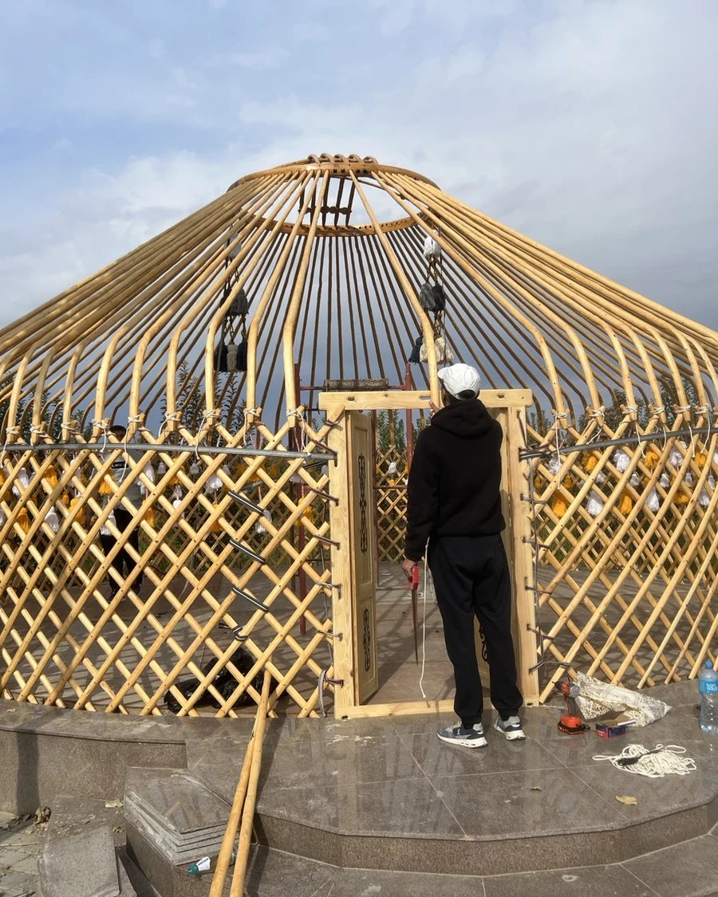
Lift a fully decorated boz üy out of its country and set it on foreign ground, and something is lost in the carrying. A cultural expression that strong, lived in by people who are not of that culture, in a place it was never meant for, stops being homage. We do not do that, and we would not advise a resort to.
What we send into the world is the architecture: the timeless geometry of the boz üy, perfected over thousands of years, stripped of the ethnic ornament so the grandeur of the space speaks on its own. No symbols, no ribbons, no tassels. The dome does the work.
And the tradition is kept where it should be kept, in the village, by giving its makers the one thing they actually need, which is the work. The culture stays home. The architecture travels. If a client wants the boz üy in full traditional dress, we build that too, and build it right, but for a resort our counsel is always the architecture. As far as we can tell, no one else is drawing that line, and it is the whole of what we do.
The standard we keep
A boz üy gives a guest thousands of years of nomadic life: a willow frame steam-bent by hand, felt rolled from mountain wool, every joint bound in rawhide, not one piece of metal.
This is the real thing. Buyers who want it, at the volume a resort needs, come to the village that never stopped making it. That village is where we work.
01 · Provenance
One village on the south shore of Lake Issyk-Kul has made boz üy for generations. It is recognised across Central Asia as the centre of the craft. We build there, not near there.
02 · The makers
Frames are cut and steam-bent by hand over weeks, by families who learned it from their fathers. The knowledge is not written down. It is held in the hands that still do the work.
03 · Recognition
The art of making the Kyrgyz boz üy is inscribed on the UNESCO list of intangible cultural heritage. We supply the documented, certifiable version of a protected craft.
Five to twenty-five units to a single site, certified and finished for hospitality, delivered from Kyrgyzstan to your door. One supplier, one standard, the real thing at volume.
Open the dossierOne boz üy as an architectural space, a spa, a studio, a guest pavilion. Finished to the same clean standard, not as an ethnic import, but as a form that belongs anywhere.
Start a conversation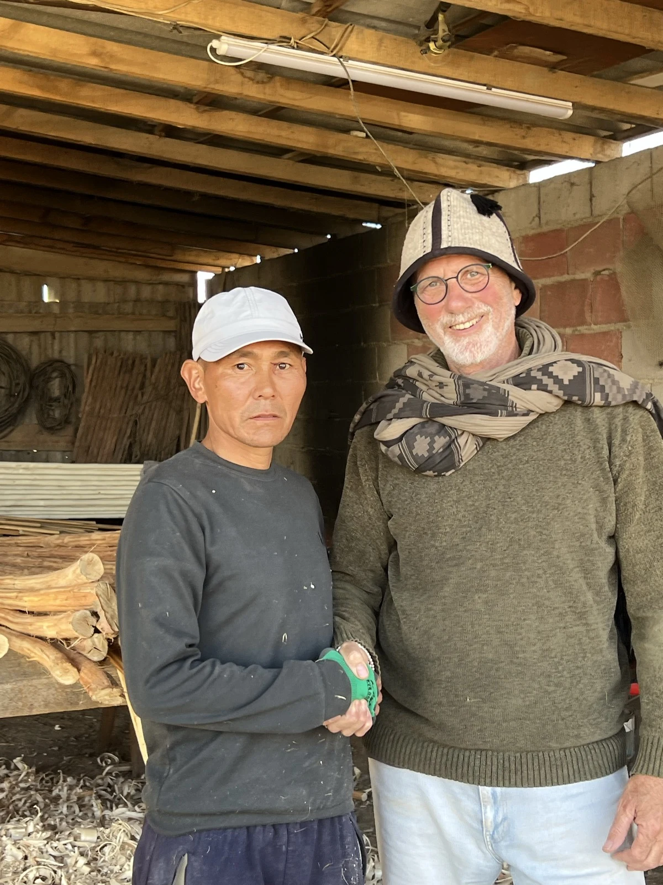
We are not a factory and we are not a middleman. We live with the village that makes these tents, we hold its standard, and we put our name to every unit that leaves it.
When a resort orders five boz üy, or twenty-five, they are not buying a product off a shelf. They are buying a guarantee that what arrives is the real thing, made the real way, by the people who never let it go.
Yossi
Co-founder
Nura
Co-founder · Kyrgyzstan
Tell us the site, the count, and the timeline. We will tell you what it takes to put the genuine boz üy on your land.
Request a quote